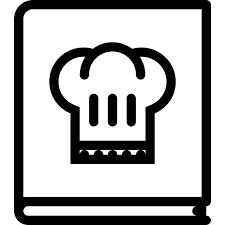

Sair

Enviar Receita
A Chef Help nasceu de uma idéia de um aluno BandTec chamado Yuri, um jovem criativo amante da cozinha. Ele começou a aprender culinária ao seus 6 anos fazendo um simples arroz com a ajuda de sua mãe, e com o passar do tempo evoluiu o seu conhecimento e dominou novos pratos. Porém ele sempre compartilhava suas receitas com a familia ou amigos, sempre gostava de ensinar aos outros o que sabia. Com o seus 18 anos entrou na faculdade e começou a fazer ADS (Análise e desenvolvimento de Sistemas), próximo do fim de seu 1º Semestre, recebeu o desafio de criar um site completo e individualmente, com isso surgiu a ideia de criar um de receitas culinárias para compartilhar tudo o que sabe para que qualquer pessoa possa ver. E voilá, aqui estamos agora!